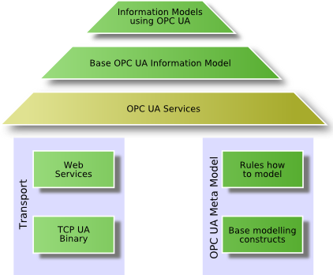
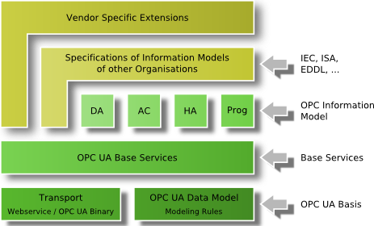

OPC UA
工业通讯使用OPC UA的十个好处
组件对象模型(COM)/分布式组件对象模型(DCOM)的终止 传统OPC应用之间的数据交换是基于微软的组件对象模型(COM)技术。因为视窗(Windows)操作系统在世界范围内得到了广泛的应用，同时也促进了视窗计算机在自动化中的使用，所以COM技术也为OPC技术的广泛使用创造了条件。在2002年初，微软发布了新的.NET框架并且宣布COM技术的停止研发。虽然这不意味着将来的视窗操作系统不支持COM，但作为停止的结果，传统OPC的基础技术已经不再发展，或早或晚要被淘汰，所以要寻求新的替换方案。
COM的局限 上世纪90年代，随着视窗计算机的普及，微软COM/DCOM技术引入的一组特性，得到了家庭计算机用户和工业自动化用户的高度欣赏。这些特性包括了拷贝与粘贴，拖拽与投放，链接与嵌入。DCOM还提供了完整的通信基础架构，并带有必要的安全机制，诸如授权、鉴权和加密。DCOM安全机制能够实现计算机对数据和程序的远程访问。但DCOM安全机制同时也对安装工程师、系统集成商和开发者管理项目提出了挑战，其中包括了跨越PC的OPC通信。正确地设置DCOM安全功能是非常困难的任务，需要很多专业的知识。作为结果，安装工程师和系统集成商会例行公事地选择快速流程，在所有连网的OPC计算机采取宽松的访问授权，造成大多数保护不起作用且允许非授权远程访问。这种做法与信息技术(IT)安全的要求相违背。在长期运行时，可能会有粗心大意者或者蓄意破坏的人造成损害的危险。DCOM安全设置常常需要一种特别才能，而配置OPC通信功能则非常容易。
OPC通信穿过防火墙 在自动化行业，很早就认识到OPC通信需要跨越计算机边界的必要性，这是另一个DCOM限制传统OPC通信的地方。DCOM需要多个端口，如鉴权、传输数据和一系列服务建立一个连接。所以，在防火墙中不得不打开很多端口，才能让DCOM通信穿过他。在防火墙上每打开一个端口都是一个安全隐患，为黑客攻击提供一种潜在可能。OPCUA中的隧道技术是一种被广泛接受的策略，解决了传统OPC产品中DCOM限制的问题。
在非视窗平台使用OPC 在工业应用中，几乎“无所不在”的微软平台，把DCOM作为操作系统的一个组件是传统OPC能被快速接受的一个重要因素。但是同时，OPC的集成概念在使用其他操作系统时就不灵光了，因为他们不支持DCOM。比如在IT行业，常常使用Unix或者Linux系统就是这种情况。 自动化也是这样，有的应用领域明确拒绝使用视窗操作系统。嵌入式设备领域是另一个视窗很难(除了视窗CE或者嵌入XP)涉及的领域。这里，复杂的应用直接嵌入到现场设备、PLC、操作屏和其他设备之中。他们运行VxWorks、QNX、嵌入式Linux、RTOS或者其他嵌入式操作系统而没有DCOM。在这些领域里使用OPC的集成概念注定要失败，因为OPC需要DCOM作为技术基础，而这个基础在嵌入式系统中正好缺失。
通过Web服务实现跨平台的OPC通信 随着在2003年OPCXML-DA规范的发布，OPC基金会第一次展示了一种独立于视窗平台的方式和克服DCOM限制的方法。今天，很多OPCXML-DA产品演示了基于Web服务的OPC技术。但是XML-DA通信的数据吞吐量还是比不上DCOM，通信速度要慢5到7倍。这个速度对于很多自动化的要求而言是太慢了。基于Web服务的OPC通信功能还是有用的，因为实现了跨越操作系统的能力，但还要进一步提高数据传输性能。
统一数据模型 迄今为止，传统的OPC技术已有3种不同的OPC服务器–数据访问服务器、报警与事件服务器和历史数据访问服务器。如果用户需要获取一个温度传感器的当前值，一个温度超过限定值的事件和一个温度的历史平均值，那么他必须发送3个请求，访问3个服务器。用户访问过程数据、事件和历史数据用不同的方法要花费很多的时间。所以，统一这3种对象模型可以使这样的事情变得非常简单，不仅对OPC产品的供应商有利，也对系统集成商和用户有利。
支持复杂数据结构 OPC的一个主要应用是对串行通信或者现场总线联网设备的操作和监视。为了配置设备，OPC客户机需要写入数据类型，通过OPC服务器到达设备，包括数据结构元件的意义。OPC基金会已经创建了描述复杂数据结构的方法，即复杂数据规范。然而，大多数今天市场上的传统OPC产品除了很少的例外，不能使用复杂数据规范。
保证通信不丢失数据 最早定义的数据访问，可以让客户应用程序周期获得过程数据的当前状态。如果在OPC客户机和远程OPC服务器之间的物理通信连接发生了问题，数据通信会受到损坏。当通信损坏时，传输到OPC客户机数据会发生改变，甚至丢失。这种数据丢失在有些数据访问应用中不是关键的，诸如趋势记录、过程监视或者过程显示。但在有些场合的应用中是非常关键的。比如，OPC技术已经成为这些区域的基础，诸如化工或者石化工业，这些地方要求必须无缝地记录数据。为了达到这个目标，供应商需要实施特殊扩展的方法。他们使用基于连接的监视系统，确保对断开的通信快速检测，如果通信断开能够自动重新连接，在数据访问服务器中有数据缓存、冗余、存储和转发功能。这些扩展的方法很有用，但在传统的OPC规范中没有定义，会因供应商不同而不同。
对非授权数据访问而增加的保护 随着自动化行业基于以太网的通信不断增长，自动化和办公室网络已经纠缠在一起。同时，垂直集成的想法产生了新的需求，这种类型的集成也带来了新的安全风险。OPC也增加了远程维护和远程控制概念的使用。这里再一次提到，对外围非授权的访问，必须满足更严格的信息安全要求。随着网络犯罪、间谍和破坏活动的增长，信息技术安全越来越显得重要–所以使用OPC也有了安全的要求。传统的OPC供应商没有开发专有的预防措施，所以不能满足这些安全要求。
支持新的命令调用 在很多应用中，不仅读写数值非常重要，而且执行命令也非常重要，诸如启动或者停止一台驱动器或者把一个文件下载到设备中。OPC命令规范定义了执行这些命令的方法，但这仅在OPCUA中有效，不能在传统的OPC中使用。
开放性，产业性，互联性，I OPC是通过开放的标准实现开放链接，由一系列的标准规范组成
OPC是一个工业标准，它定义了一个开放接口，在工业客户机和服务器之间进行数据交换
开放性：平台独立性；全能应用；完全链接
高效性：业界标准；独立于生产厂商；互操作性；可靠性
协作性：设备集成分析设备集成；智能电网；现场设备集成
OPC UA是OPC统一架构，是OPC基金会推出的新一代技术，用于实现将原始数据和预处理信息从生产厂商到 生产计划系统或ERP系统之间的安全、可靠、跨商家的数据传输。
OPC UA标准化通信的优势：
防止非法数据访问；数据安全性和可靠性；平台独立性和可扩展性
简化界面，拓展潜力，更多的应用选择，可以接入物联网和智能手机，用智能手机或是IPAD进行实时在线编程。
新一代的OPC UA统一标准在所有的平台（西门子、施耐德、三菱、NI等）上都可以实现快速、安全、灵活的通信。
OPC UA采用面向服务的技术，实现了平台独立性，使全新而经济的自动化理念得以实施。
嵌入式现场设备、过程控制系统、可编程逻辑控制器、网关和操作面板均可配置精简的OPC UA服务器方案，直接便携地与WINDOWS EMBEDDED,LINUX,VXWORKS,QNX,RTOS及其他各类操作系统连接。之前访问非WINDOWS平台设备上的数据，需特别配备一台单独WINDOWS PC作为OPC服务器，现在已经不再需要。
OPC UA组件也可在其他操作系统（如MICROSOFT WINDOWS,SOLARIS,HP-UX,AIX等）上广泛应用于ERP、IT、生产计划系统、控制软件和电子商务程序。
OPC UA组件功能具有可扩展性，从嵌入式设备的精简实施方案到整个企业范围内主机数据管理系统的完全配置均可实现。
OPC UA采用一套优化的基于TCP的统一架构二进制协议进行数据交换；同时支持网络服务（WEB SERVICES）和HTTP。在防火墙中只需打开一个端口即可。集成化的安全机制可确保在互联网上的安全通信。
OPC UA是OPC是OPC基金会推出的新一代技术，用于实现将原始数据和预处理信息从生产厂商到生产计划系统或ERP系统之间的安全、可靠、跨商家的数据传输。通过OPC UA，所有经授权的程序和个人可随时随地获取所需信息。该架构独立于程序生产厂家、编程语言和操作系统。
OPC UA具有的一些重要特性，如平台独立性、可扩展性、高可用性和互联网功能，是对现有OPC工业标准的有效补充。
OPC UA不在基于DCOM，而是建立在面向服务的架构（SOA）之上，因此可以便携地实现数据连接。
今天，OPC UA的数据交换可独立于MICROSOFT、UNIX或其他任何系统，已经成为连接企业级系统和嵌入式自动化组件之间的桥梁。
OPC UA技术的2013年深圳研讨会，我参与了！ 从PLC的通讯统一性看，OPC UA的平台紧跟网络的发展，考虑了安全性，可靠性以及通讯易用性，是一个PLC走向通讯统一平台的一个很好的方向。基于这个通用性，对于一些大的品牌，会有限支持，也有一些会全力支持。 某法国品牌在2013年开始推的全系列PLC，支持OPC UA，意味着直接通过手机等就可以实现PLC的通讯，监控。 欧系产品通讯网络，德国品牌的势力很大。日本的品牌协议研究弱一些。现在某些日本品牌支持了如Ethernet/IP、EtherCAT，也是对德国某品牌的一个联合狙击。但用户的习惯很难改变！呵呵
OPC UA 节点
OPC UA 节点定义：
public interface INode
{
/// <summary>
/// The node identifier.
/// </summary>
/// <value>The node identifier.</value>
ExpandedNodeId NodeId
{
get;
}
/// <summary>
/// The node class.
/// </summary>
/// <value>The node class.</value>
NodeClass NodeClass
{
get;
}
/// <summary>
/// The locale independent browse name.
/// </summary>
/// <value>The name of the browse.</value>
QualifiedName BrowseName
{
get;
}
/// <summary>
/// The localized display name.
/// </summary>
/// <value>The display name.</value>
LocalizedText DisplayName
{
get;
}
/// <summary>
/// The identifier for the TypeDefinition node.
/// </summary>
/// <value>The type definition identifier.</value>
ExpandedNodeId TypeDefinitionId
{
get;
}
}
NodeId 是节点的唯一编号，
- Term heading
- Description heading
- OBJECT
- 1
- VARIABLE
- 2
- METHOD
- 4
- OBJECT_TYPE
- 8
- VARIABLE_TYPE
- 16
- REFERENCE_TYPE
- 32
- DATA_TYPE
- 64
- VIEW
- 128
BrowseName用于浏览，
DisplayName 是节点的名称，
TypeDefinitionId是类型定义的唯一编号。
Group
Each "variable" in your post (also called "tag", the actual proper OPC term would be "OPC item") represents a value in the underlying device or system. As such, the same variable, if used at multiple places, is generally expected to have the same value - that's the whole purpose of it.
OPC groups are the way the OPC client tells the OPC server which OPC items it is interested in. They exist mainly for performance reasons: All OPC items in the same OPC group share some common characteristics, such as update rate, whether they are actively updated, and so on. This way, once the group is created and items added to it, the client does not have to address each item individually and repeat the data if it wants to "do something" to the whole group (such as change the update rate, or unsubscribe all the items).
OPC clients have full freedom in how they create the OPC groups, and which items they put into them. Not only you can have the same item in multiple groups; in fact you can even have the same item multiple items in the same group (though I doubt it is useful for anything). Therefore the answer to your questions is negative, at least as far the OPC server is concerned: You cannot "isolate" the groups; if you put an item into one group, the server must (to be compliant) allow you to put it into other groups as well (remember that there may be are also other clients that create their groups, too - and they should not be influenced either).
If you were writing an OPC client, then, of course, you could impose any limitations you like to what it allows the user to do or not.
is possible to 'programatically' create variables (OPC Items) on the OPC Server? I am using OPCDA.NET
It is not possible in any standardized way through the interfaces of the OPC Data Access spec. Specific servers may have some ways to achieve it, but even then it would be relatively rare. I can recall that (I think) Kepware servers, with their driver-model, at least for register-based devices, have Item IDs that basically have pre-defined syntax, which contains the register type and register number. It is then possible to "create" the variable simply by reading/writing/subscribing to a properly-formed Item ID, without it being preconfigured. But it is done beyond/aside the OPC standard.
参见
Introduction to OPC UA
To reach the defined goals, the OPC Unified Architecture builds on different layers shown in the following figure

The fundamental components of OPC Unified Architecture are transport mechanisms and data modeling.
The transport defines different mechanisms optimized for different use cases. The first version of OPC UA is defining an optimized binary TCP protocol for high performance intranet communication as well as a mapping to accepted internet standards like Web Services, XML, and HTTP for firewall-friendly internet communication. Both transports are using the same message-based security model known from Web Services. The abstract communication model does not depend on a specific protocol mapping and allows adding new protocols in the future.
The data modeling defines the rules and base building blocks necessary to expose an information model with OPC UA. It defines also the entry points into the address space and base types used to build a type hierarchy. This base can be extended by information models building on top of the abstract modeling concepts. In addition, it defines some enhanced concepts like describing state machines used in different information models.
The UA Services are the interface between servers as supplier of an information model and clients as consumers of that information model. The Services are defined in an abstract manner. They are using the transport mechanisms to exchange the data between client and server.
This basic concept of OPC UA enables an OPC UA client to access the smallest pieces of data without the need to understand the whole model exposed by complex systems. OPC UA clients also understanding specific models can use more enhanced features defined for special domains and use cases. The following figure shows the different layers of information models defined by OPC, by other organizations, or by vendors.

To cover all successful features known from Classic OPC, information models for the domain of process information are defined by OPC UA on top of the base specifications. DA defines automation-data-specific extensions such as the modeling of analog or discrete data and how to expose quality of service. All other DA features are already covered by the base. Alarm & Conditions (AC) specifies an advanced model for process alarm management and condition monitoring. Historical Access (HA) defines the mechanisms to access historical data and historical events. Programs (Prog) specifies a mechanism to start, manipulate, and monitor the execution of programs.
Other organizations can built their models on top of the UA base or on top of the OPC information model, exposing their specific information via OPC UA. Examples for standards already working on mappings to OPC UA are Field Device Integration (FDI) combining Electronic Device Description Language (EDDL), and Field Device Tool (FDT) both used to describe, to configure, and to monitor devices and PLCopen, a standard for PLC programming languages.
Additional vendor-specific information models will be defined using directly the UA base, the OPC models, or other OPC-UA-based information models.
To continue the OPC introduction you can read OPC UA Specifications.
OPC首字母缩写词代表什么？
从2000年初以来，我们就一直在使用OPC软件互操作性标准，而那些正准备踏入和想要踏入工业自动化领域的人们却对这些含义感到困惑。
所以在本中，我将系统地为你梳理OPC知识。
OPC首字母缩写词代表什么？
问一个OPC老手，他们或许会笑，因为他们知道有很多含义！在经典的且程序化的说法是：O LE for P rocess C ontrol(用于过程控制的OLE)。OLE 或对象链接和嵌入是Windows的基本早期构建块，允许应用程序在它们之间共享复杂的信息。我记得Windows 3.0的第一个演示中，人们将 Excel电子表格嵌入到 Microsoft Word文档中，以及更新电子表格，打开Word和更新文档的重要性。原始OPC标准源自该技术和 COM 或 Windows 组件对象模型。 从那以后，我们会听到很多其他的一些定义，但是比较出名的是现在官方OPC基金会所给出的说法是：它的含义是O pen P latform C ommunications(开放平台通信)。其实无论它的定义是什么，其目标保持不变：消除自动化软件和硬件平台之间互操作性的障碍，为用户提供选择。
OPC质量
在 OPC 之前，当你的 HMI 或 SCADA 软件用内置驱动程序读取数据之前，它要么得到数据要么没有数据。 如果你没有得到数据，你就无法知道最后一次获得数据是什么时候。 两者之间没有差别。
使用OPC服务器，它们可以缓存或保留从设备读取的最后一个值。它们还会在缓存中为数据加时间戳(TImestamps)，通常使用OPC服务器从设备读取值的时间。某些设备存储上次更改数据的时间戳，并可使用设备特定的通信协议将其传递给OPC服务器。如果设备支持该设备并且OPC服务器支持它，那么则可以使用设备时间戳。(如：支持该功能的协议的设备时间戳的Software Toolbox产品包括TOP Server DNP，IEC 61850和IEC 60870驱动程序。)
OPC质量是OPC服务器告诉OPC客户更多关于它们提供价值的一种方式。这样做的方法是传递一个数字以及值和时间戳。在OPC中我们称之为VQT或"Value，Quality，Timestamp"(“价值，质量，时间戳”)。OPC质量编号实际上是通过设置字位来确定的，这会导致产生不同的值。值192表示“良好”质量，这意味着OPC服务器最后一次轮询设备它能够成功获取数据，因此OPC客户端可以信任该值。值为0表示质量不佳，通常表示OPC服务器与其轮询的设备之间存在通信故障。OPC服务器可以使用一系列其他值来表示质量差的原因，但目前它们并未得到广泛实施。我之前有发过一篇关于OPC数据质量的文章，感兴趣的朋友可以去看看。
其实最重要的是OPC客户端应用程序通常可以配置为更改它们在操作员屏幕或历史数据库中向用户显示值的方式，以便人们知道该值不值得信任和不值得信任原因。